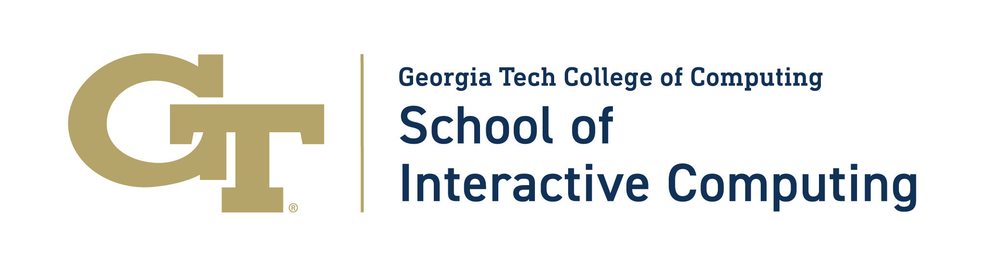
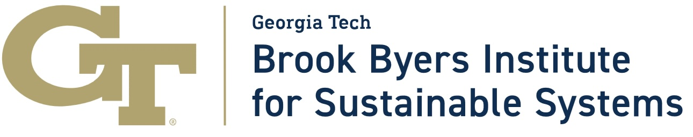

The Georgia Tech School of Interactive Computing is hosting the 2026 Summit on Responsible Computing, AI, and Society, December 7-8, 2026.
Overview
The Summit on Responsible Computing, AI, and Society aims to explore the future of computing for health, sustainability, human-centered AI, and policy. The summit will bring together luminary researchers in computing for health, sustainability, human-centered AI, and tech policy to lay out the frontiers of these critical fields, and to plot out how they must evolve.
Please see the Call for Contributions
Registration
Registration is not yet open. Please check the Registration page for updates.
Keynote Speakers
Miriam Posner, Ph.D.
Day 1 (December 7), Afternoon Keynote
 Miriam Posner is an associate professor at the UCLA School of Information. She’s also a digital humanist with interests in labor, race, feminism, and the history and philosophy of data. As a digital humanist, she is particularly interested in the visualization of large bodies of data from cultural heritage institutions, and the application of digital methods to the analysis of images and video. A film, media, and American studies scholar by training, she frequently writes on the application of digital methods to the humanities. She is at work on two projects: the first on what “data” might mean for humanistic research; and the second on how multinational corporations are making use of data in their supply chains.
Miriam Posner is an associate professor at the UCLA School of Information. She’s also a digital humanist with interests in labor, race, feminism, and the history and philosophy of data. As a digital humanist, she is particularly interested in the visualization of large bodies of data from cultural heritage institutions, and the application of digital methods to the analysis of images and video. A film, media, and American studies scholar by training, she frequently writes on the application of digital methods to the humanities. She is at work on two projects: the first on what “data” might mean for humanistic research; and the second on how multinational corporations are making use of data in their supply chains.
Sasha Luccioni, Ph.D.
Day 2 (December 8), Morning Keynote
 Dr. Sasha Luccioni is a leading scientist at the nexus of artificial intelligence, ethics, and sustainability, with a PhD in AI and a decade of research and industry expertise. She is the Co-Founder and Chief Scientific Officer at Sustainable AI Group, a research and advisory firm helping enterprises measure, compare, and act on the environmental impacts of AI. In recent years, Dr. Luccioni’s work was recognized by TIME Magazine’s 100 most influential people in AI and by Business Insider on its 2024 AI Power List.
Dr. Sasha Luccioni is a leading scientist at the nexus of artificial intelligence, ethics, and sustainability, with a PhD in AI and a decade of research and industry expertise. She is the Co-Founder and Chief Scientific Officer at Sustainable AI Group, a research and advisory firm helping enterprises measure, compare, and act on the environmental impacts of AI. In recent years, Dr. Luccioni’s work was recognized by TIME Magazine’s 100 most influential people in AI and by Business Insider on its 2024 AI Power List.
Doctoral Consortium
The Summit will feature a Doctoral Consortium on December 8th, 2026, which will offer Ph.D. students opportunities to introduce their research to the broader research community, and receive mentorship, and constructive input. We are looking for individuals just before, or just after, their PhD proposal defense who are working in the area of human-centered AI, responsible AI, responsible computing, sustainability (environmental or community), or health.
Please see the Doctoral Consortium page for information about how to apply.
Venue
The Summit will take place at the Georgia Tech Academy of Medicine historical building in Midtown Atlanta, Georgia. It is near to the School of Interactive Computing and the GT Machine Learning Center.
Stay in Touch
If you would like to receive updates about the current or future Summits, you can add yourself to our mailing list.
Sponsors
The Summit graciously thanks its sponsors for proving support for the Doctoral Consortium.
Primary Sponsors
 |
Georgia Tech School of Interactive Computing |
 |
Brook Byers Institute for Sustainable Systems |
Gold Sponsors
| Georgia Tech Center for Advancing Responsible Computing |
Silver Sponsors
| Atlanta Interdisciplinary Artificial Intelligence (AIAI) Network |